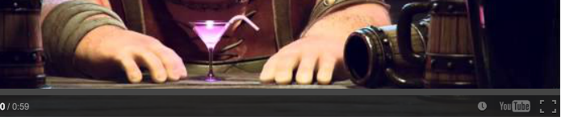
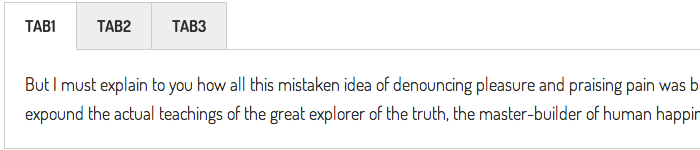
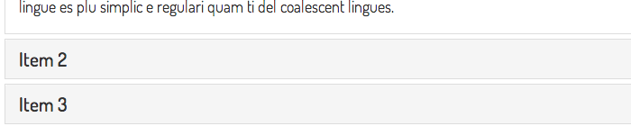
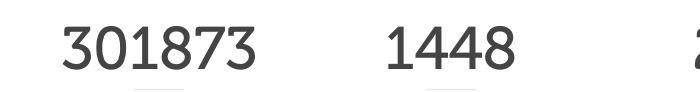

-

Bootstrap 3 based grid. This Shortcode will produce three Columns
This Shortcode will produce two Columns with various widths
-

This Shortcode will produce a youtube Video
Example: http://youtu.be/5Q7eLgU6NOk OR http://www.youtube.com/watch?v=5Q7eLgU6NOk
This Shortcode will produce a vimeo Video
Example: http://vimeo.com/86295452
-

This shortcode will make 3 tab in top
Options:
"th-top-nav" class in "hippo-tabs" will make top positioned tab.
selected="yes" in "hippo-tab-item" shortcode will make default opened tab item.
all "id" of "hippo-tab-item" should unique value.
"tabs-left" class in "hippo-tabs" will make left positioned tab.
"tabs-right" class in "hippo-tabs" will make right positioned tab.
-
This Shortcode will show a FontAwesome Icon
Options:
"name" is icon name
"size" is icon size in pixel
"color" is color name or color code
-

This Shortcode will produce a Accordions
Options:
"open" in "hippo-accordion-item" shortcode is opened item.
"title" in "hippo-accordion-item" shortcode is accordion item title.
"id" in "hippo-accordion-item" shortcode is accordion item id and should UNIQUE value.
-

This Shortcode will produce a incremental counter
Options:
"from" in "hippo-counter" shortcode is starting point.
"to" in "hippo-counter" shortcode is counter stop point.
"speed" in "hippo-counter" is counter incremental speed.
"refresh" in "hippo-counter" is counter refresh interval.
"class" in "hippo-counter" is custom css class name.